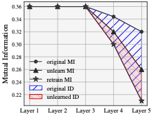
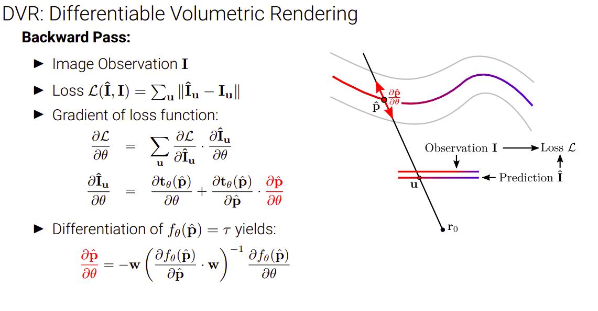
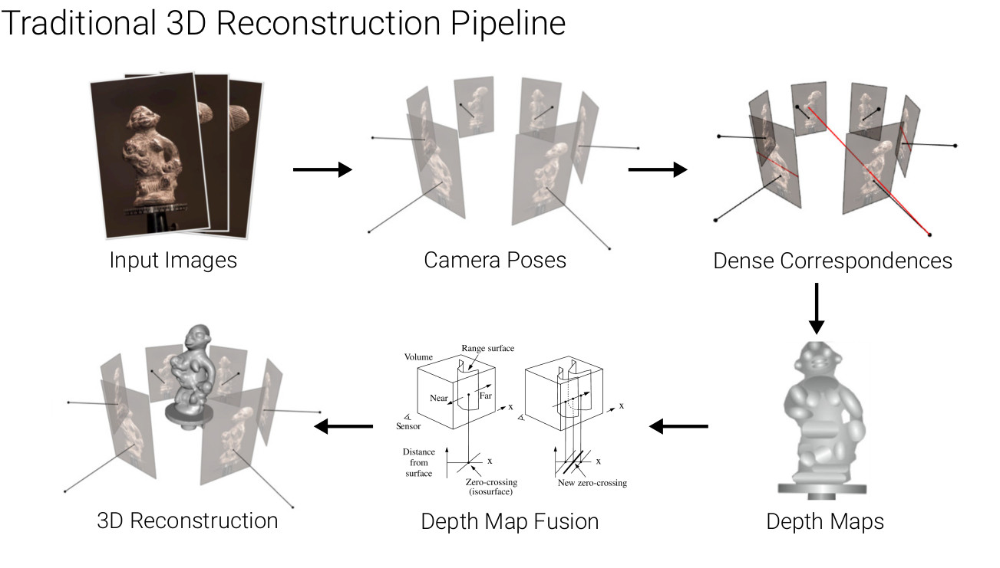
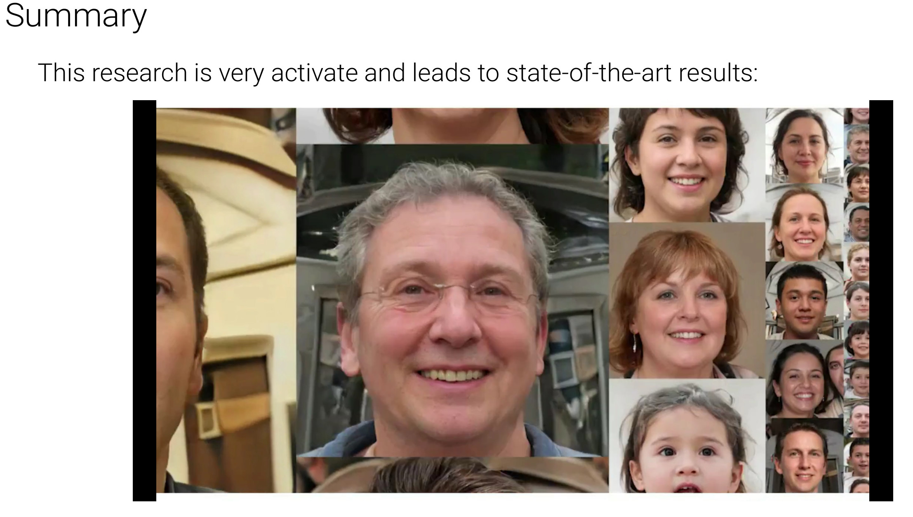
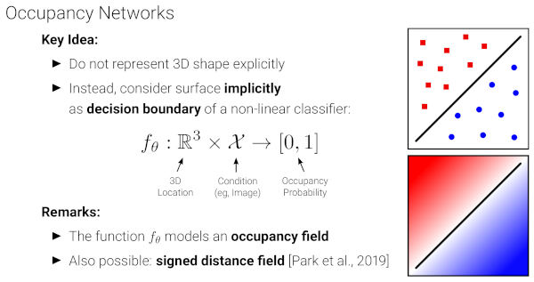
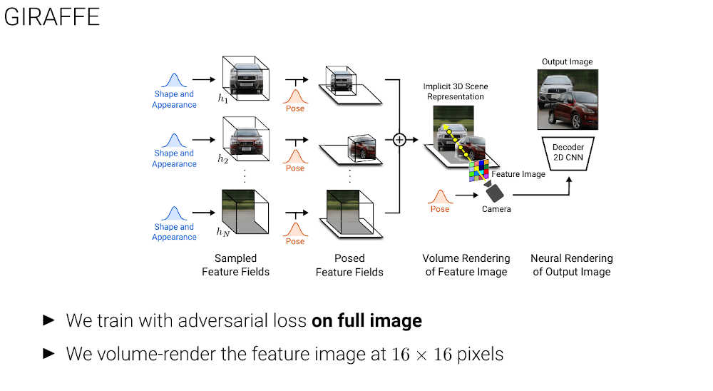

Dongjae Jeon
I am an senior undergraduate student at Yonsei University, majoring in Economics and Computer Science. Currently, I am working as an undergraduate intern at the Machine Perception and Reasoning Lab. at Seoul National University, under the supervision of Professor Jonghyun Choi. My research interests lie in the domain of safe and reliable AI, particularly in multi-modal applications. Previously, I have conducted research on Continual Learning (CL) within the context of computer vision. My primary research goal is to understand how machines perceive representations and to develop methods to enhance their robustness and reliability.
For any inquiries, feel free to reach out to me via mail!

Publications

Michael Niemeyer, Fabian Manhardt, Marie-Julie Rakotosaona, Michael Oechsle, Rama Gosula, Keisuke Tateno, John Bates, Dominik Kaeser, Federico Tombari
arXiv.org, 2024
Project Page / Paper /
@InProceedings{niemeyer2024arxiv,
author = {Michael Niemeyer and Fabian Manhardt and Marie-Julie Rakotosaona and Michael Oechsle and Rama Gosula and Keisuke Tateno and John Bates and Dominik Kaeser and Federico Tombari},
title = {RadSplat: Radiance Field-Informed Gaussian Splatting for Robust Real-Time Rendering with 900+ FPS},
booktitle = {arXiv.org},
year = {2024},
}
Dongjae Jeon, Wonje Jeung, Taeheon Kim, Albert No, Jonghyun Choi
arXiv.org, 2024
Project Page /
@InProceedings{jeon2024information,
author = {Dongjae Jeon and Wonje Jeung and Taeheon Kim and Albert No and Jonghyun Choi},
title = {An Information Theoretic Metric for Evaluating Unlearning Models},
booktitle = {arXiv.org},
year = {2024},
}Talks

Delft University of Technology, 2022
Slides

GAMES Webinar Series, 2022
Slides


Technical University Munic - AI Lecture Series, 2021
Slides

Homepage Template
Feel free to use this website as a template! It is fully responsive and very easy to use and maintain as it uses a python script that crawls your bib files to automatically add the papers and talks. If you find it helpful, please add a link to my website - I will also add a link to yours (if you want). Checkout the github repository for instructions on how to use it.
⚛
⚛